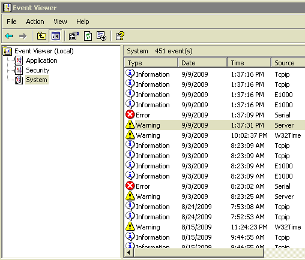

Possible Event Log Messages with Explanation and Work Around
Possible Events with Explanation and Work Around
| Event ID | Description | Action |
|---|---|---|
| 6008 | Unexpected shutdown by cycling the power rather than a software shutdown / reboot. | Inform the operator to shut down the software before powering off the PC.
Note: When rebooting the Privacy & Security compliant Windows 8 PC, you must enter security password "Access2Admin" when prompted to launch Windows.

|
| 5 | Touch screen not found. |
For Windows XP console PC and Monitor with serial touchscreen:
For Windows XP console PC or Windows 8 Mini PC and Monitor with USB touchscreen:
|
| 9 | IntelATA. Indicates problems accessing the Hard Drive. | Replace the Hard Drive. |
| 9 | CD-ROM - device was not detected during PC boot. | Verify cable connections, replace the PC if a replacement CD ROM drive is not available. |
| 11 or 15 | Tape drive controller error. The drive is detected on boot but does not perform a backup. | Replace Tape Drive or the PC. |
| 7001 or 7002 | Illegal or duplicate Computer Names on the network.
Unable to connect to instrument... message during software load or UI launch. |
For Windows XP:
For Windows 8:
|
Windows XP System Events

| Event ID | Description | Action |
|---|---|---|
| 32 | W32Time
The time service has not been able to synchronize. |
Harmless, No action. Windows wants to check the time using an internet connection. |
| 18 | Serial
No parameters subkey found ... This is odd.... This also causes a "multimedia audio controller" error in the Windows Device Manager |
Harmless, No action. This is caused by the Windows Embedded version that we use. |
| 2511 | Server
The directory C:\Share no linger exists. |
Harmless, No action. The share folder was used for the XP upgrade and then deleted. This error is fixed in V1.3, even though it was harmless. |
| Userenv (in the Application log.) | Harmless, No action. This can fill the event log so much it's hard to see anything else. Application events should also show up in the UI Event Log. |